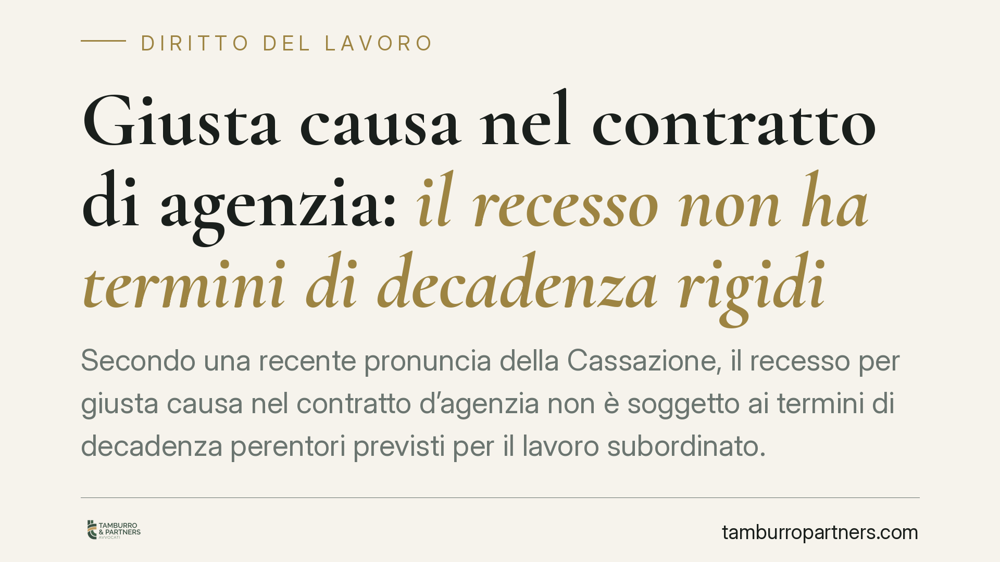

Giusta causa nel contratto di agenzia: il recesso non ha termini di decadenza rigidi
Secondo una recente pronuncia della Cassazione, il recesso per giusta causa nel contratto d'agenzia non è soggetto ai termini di decadenza perentori previsti per il lavoro subordinato. Il tempo trascorso tra fatto e reazione non fa decadere il diritto del preponente: ha solo valore sintomatico, da valutare in concreto secondo buona fede. Un principio che cambia la gestione delle contestazioni nelle reti di vendita.

Il principio affermato
La Suprema Corte è tornata sul recesso per giusta causa nel contratto di agenzia, chiarendo un punto che sul piano pratico fa la differenza: il preponente che intende sciogliere il rapporto per un inadempimento dell'agente non è vincolato ai termini di decadenza rigidi che governano il licenziamento disciplinare nel lavoro subordinato.
*(Riferimento di giurisprudenza in corso di verifica sulla banca dati ufficiale prima della pubblicazione.)*
Nel lavoro dipendente, l'art. 7 dello Statuto dei lavoratori impone una procedura scandita da termini: contestazione tempestiva dell'addebito, diritto di difesa, immediatezza della sanzione. Un ritardo eccessivo può far decadere il potere disciplinare. Nel contratto di agenzia questo schema non si applica.
Inquadramento normativo
Il recesso per giusta causa nel rapporto di agenzia è disciplinato dall'art. 1751, comma 2, del codice civile, che esclude il diritto dell'agente all'indennità di fine rapporto quando la cessazione è dovuta a un inadempimento a lui imputabile, di gravità tale da non consentire la prosecuzione nemmeno provvisoria del contratto.
La competenza a decidere queste controversie spetta al giudice del lavoro quando ricorrono i presupposti dell'art. 409, n. 3, c.p.c.: agente persona fisica, con prestazione a carattere prevalentemente personale e continuativo, coordinata con l'attività del preponente. È il cosiddetto rapporto di collaborazione "parasubordinata". Questo, però, non trasforma l'agente in un lavoratore dipendente: le garanzie procedurali dell'art. 7 Statuto restano fuori dal perimetro dell'agenzia.
Resta fermo che il recesso deve comunque rispettare i canoni generali di correttezza e buona fede nell'esecuzione del contratto (artt. 1175 e 1375 c.c.). È proprio qui che il tempo trascorso riacquista rilievo.
Il ritardo come indizio, non come decadenza
Il cuore della pronuncia sta nella distinzione tra decadenza e valore sintomatico del ritardo.
Nel lavoro subordinato il tardivo esercizio del potere disciplinare produce un effetto automatico: la decadenza. Nell'agenzia, invece, l'intervallo di tempo tra il fatto contestato e il recesso non estingue il diritto, ma diventa un elemento di valutazione: se il preponente reagisce molto tempo dopo, il giudice può leggere l'attesa come segno che l'inadempimento non era poi così grave da impedire la prosecuzione del rapporto.
Si tratta di una valutazione in concreto, caso per caso. La Corte riconosce margini più ampi alle organizzazioni complesse e ai settori regolamentati — si pensi alle reti di promotori finanziari — dove l'accertamento di un illecito richiede istruttorie interne, controlli e tempi tecnici non comprimibili. In questi contesti anche intervalli di diversi mesi possono risultare giustificati, purché l'attesa sia coerente con l'attività di verifica svolta e non con una semplice tolleranza.
Implicazioni pratiche
Il principio ha una doppia faccia, ed è utile leggerlo da entrambi i lati.
Per il preponente: non esiste un termine fisso oltre il quale il recesso è precluso. Ma il tempo non è neutro. Un'attesa ingiustificata può far perdere la causa, non per decadenza formale, bensì perché mina la tesi stessa della gravità dell'inadempimento.
Per l'agente: non può invocare la decadenza automatica tipica del lavoro dipendente. Può però contestare il recesso facendo leva proprio sul ritardo, sostenendo che la lunga inerzia del preponente dimostra l'assenza di una vera giusta causa, con conseguente diritto all'indennità ex art. 1751 c.c.
La differenza, in giudizio, si gioca tutta sulla ricostruzione documentale della tempistica.
Cosa fare in concreto
- Documentate ogni fase dell'accertamento interno: segnalazioni, controlli, scambi di corrispondenza. La tracciabilità dei tempi è ciò che giustifica l'intervallo tra fatto e recesso.
- Formalizzate il recesso indicando con precisione i fatti e la loro gravità: la motivazione è il terreno su cui si misurerà la giusta causa.
- Verificate gli accordi economici collettivi applicabili (AEC agenti e rappresentanti di commercio – settore commercio o industria) e le eventuali clausole contrattuali su contestazione e preavviso.
- Agite senza indugi ingiustificati una volta completate le verifiche: un'attesa non spiegabile indebolisce la posizione del preponente.
- Se siete agenti, conservate le comunicazioni che datano la conoscenza dei fatti da parte del preponente: possono fondare la contestazione del recesso tardivo.
Un equilibrio da gestire
La pronuncia conferma che il contratto di agenzia ha regole proprie, distinte dal lavoro subordinato. La libertà da termini di decadenza rigidi non è un lasciapassare: è un sistema che premia chi agisce in modo coerente, documentato e in buona fede. Consigliamo di impostare la gestione delle contestazioni con questa logica fin dal primo accertamento.
Ogni storia di lavoro ha i suoi tempi.
Se gestisci HR e vuoi un confronto su contenzioso, ispezioni o licenziamenti, scrivi allo studio. Ti rispondiamo entro un giorno lavorativo.